Данная лекция посвящена способам манипулирования над объектами и видам трансформационных искажений, рассмотренных на примере объекта прямоугольника.

Прямоугольник можно назвать "кирпичиком" неживой природы — всего того, что создано руками человека. Особенно ярко эта геометрическая фигура присутствует в результатах деятельности людей в век промышленного прогресса. Различные виды трансформационных искажений (изменение геометрических размеров, вращение, сдвиг) позволяют получить из прямоугольника такие фигуры, как квадрат, ромб и параллелограмм (рис. 2.1).
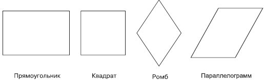
Рис. 2.1 Примеры геометрических фигур, полученных из прямоугольника в результате изменения геометрических размеров, вращения и сдвига
Способность прямоугольника к трансформационным изменениям позволяет получать разнообразные заготовки, с помощью которых в последующем можно собирать более сложные фигуры, как мозаичное полотно.
Используя настройки, которые появляются на панели свойств при выборе инструмента Rectangle (Прямоугольник), можно задавать скругление отдельных углов прямоугольника. Благодаря нeзависимости углов друг от друга в результате получаются разнообразные заготовки (рис. 2.2).
Таким образом, комбинирование трансформационных искажений с параметрами скругления углов прямоугольника предоставляет пользователям возможность создавать геометрические фигуры, в которых не сразу угадывается источник — прямоугольник (рис. 2.3).
Для построения прямоугольника в программе CorelDRAW предназначен специальный инструмент — Rectangle (Прямоугольник) () (рис. 2.4).
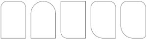
Рис. 2.2 Примеры геометрических фигур, полученных из прямоугольника настройкой параметров скругления определенного угла
Рис. 2.3 Примеры фигур, полученных из прямоугольника в результате трансформационных искажений и задания скругления различным углам
Чтобы активизировать инструмент Rectangle (Прямоугольник), выполните следующие действия.
Переместите указатель мыши (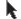) на кнопку инструмента Rectangle (Прямоугольник) ().
Щелкните кнопкой мыши.
Выбор инструмента Rectangle (Прямоугольник) сопровождается изменением вида указателя мыши на перекрестие с маленьким прямоугольником, а также графическим представлением кнопки инструмента в нажатом состоянии на панели графики (см. рис. 2.4).
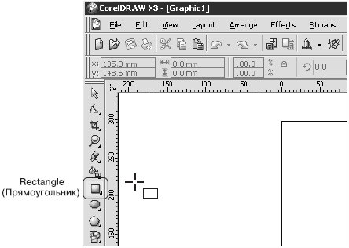
Рис. 2.4 Расположение инструмента Rectangle (Прямоугольник)

ВНИМАНИЕ. Наиболее распространенной ошибкой при активизации инструментов является действие мышью, когда пользователь, выбрав требуемый инструмент указателем мыши, нажимает кнопку мыши и пытается "вытащить" инструмент на рабочую область, не отпуская кнопку.
После того как инструмент Rectangle (Прямоугольник) активизирован, им можно многократно пользоваться до тех пор, пока не будет выбран другой.
Чтобы воспользоваться данным инструментом, выполните следующие действия.
Выберите инструмент Rectangle (Прямоугольник) ().
Переведите указатель на рабочую область, нажмите кнопку мыши и, не отпуская ее, протащите мышь. При этом будет создан объект — прямоугольник.
Закончите создание прямоугольника, отпустив кнопку мыши (рис. 2.5).
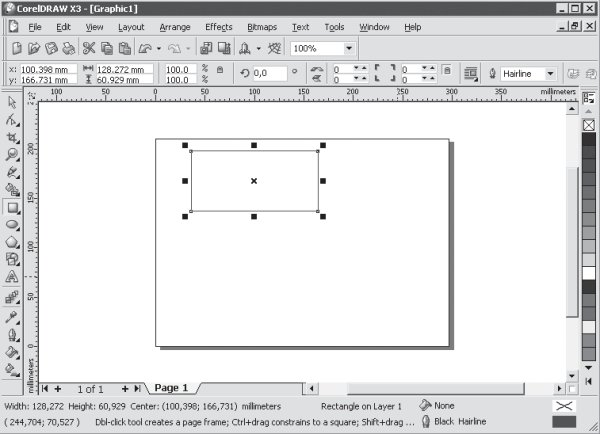
Рис. 2.5 Результат построения геометрической фигуры с помощью инструмента Rectangle (Прямоугольник)
ПРИМЕЧАНИЕ. Если при создании прямоугольника удерживать на клавиатуре нажатой клавишу Ctrl, то итоговая фигура будет представлять собой квадрат. Удерживание клавиши Shift при создании прямоугольника позволяет строить его от центральной точки в стороны, а не по диагонали.
Построенная фигура — прямоугольник — представляет собой объект-заготовку. С помощью транформационных искажений, а также задания параметров скругления углов прямоугольника получают требуемую фигуру или элемент составной фигуры (см. рис. 2.1–2.3).
Действия, связанные с трансформационными искажениями и скруглениями углов прямоугольника, лучше всего производить, активизировав инструмент Pick (Выбор) () (рис. 2.6).
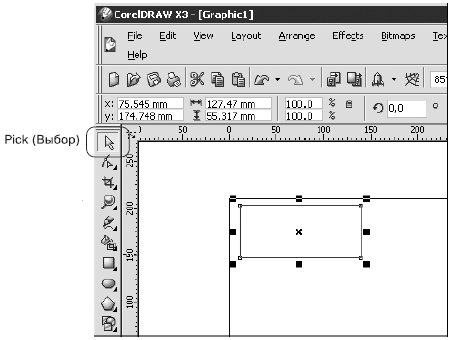
Рис. 2.6 Расположение инструмента Pick (Выбор) в окне программы CorelDRAW
Инструмент Pick (Выбор) очень удобно использовать при работе с объектами, поскольку именно он позволяет выбирать построенные объекты или несколько объектов, находящихся в рабочей области окна программы CorelDRAW.
Чтобы выделить отдельный объект с помощью инструмента Pick (Выбор), выполните следующие действия
Выберите инструмент Pick (Выбор) ().
Наведите острие стрелки указателя мыши() на контур объекта, который необходимо выделить (рис.2.7,а).
Не отводя указатель мыши от контура объекта, выполните щелчок.
Если при щелчке рука не дрогнула и вы попали острием стрелки указателя на контур объекта,то в результате вокруг объекта появится невидимая габаритная рамка (selection box), обозначаемая восемью управляющими маркерами (прямоугольники ( ) в углах и на серединах сторон) и центром, отмеченным значком (рис. 2.7, б).
) в углах и на серединах сторон) и центром, отмеченным значком (рис. 2.7, б).
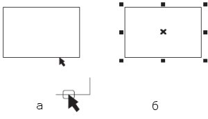
Рис. 2.7 Расположение указателя мыши при выделении объекта (а) и пример выделенного объекта (б)
СОВЕТ. Чтобы снять выделение с объекта, достаточно щелкнуть кнопкой мыши, когда указатель находится на свободной от объектов части рабочей области.
Чтобы воспользоваться инструментом Pick (Выбор) для выделения нескольких объектов (группы), выполните следующие действия.
Выберите инструмент Pick (Выбор) ().
Выделите один из объектов будущей группы.
Нажмите на клавиатуре клавишу Shift и, удерживая ее, продолжайте выбирать объекты, указывая на их контуры указателем и щелкая кнопкой мыши.
После того как будет выбран последний объект группы, отпустите клавишу Shift.
В результате вокруг группы выделенных объектов появится габаритная рамка (рис. 2.8).
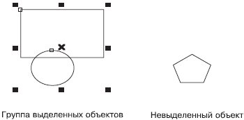
Рис. 2.8 Выделение нескольких объектов (группы)
Только после того как объект или группа объектов выбрана, можно производить действия, связанные с трансформационными искажениями.
СОВЕТ. Чтобы снять выделение со всей группы объектов, достаточно щелкнуть кнопкой мыши на свободной от объектов части рабочей области.
Чтобы снять выделение с объекта, входящего в группу выделенных, необходимо при нажатой клавише Shift подвести к контуру требуемого объекта указатель мыши и щелкнуть.
Только после того как объект или группа объектов выбрана, можно производить действия, связанные с трансформационными искажениями.
СОВЕТ. Выделенный объект или группу объектов можно удалить, нажав на клавиатуре клавишу Delete.
Над всеми объектами или группами объектов в программе CorelDRAW можно производить следующие трансформационные искажения (рис. 2.9):
перемещение;
масштабирование;
поворот;
наклон;
зеркальное отображение.
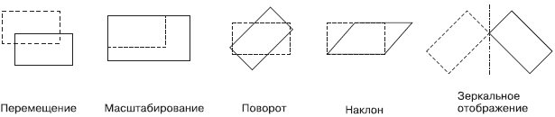
Рис. 2.9 Примеры трансформационных искажений
Все виды трансформационных искажений можно выполнять как свободным движением руки с помощью мыши, так и точно, путем указания числовых значений параметров конкретного искажения.
Напомню, что вокруг выделенного объекта появляется невидимая габаритная рамка. Кроме этого, вверху окна программы отображается панель свойств с доступными числовыми значениями искажения данного объекта (рис. 2.10, 2.11).
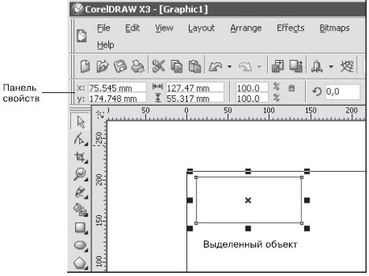
Рис. 2.10 Выделенный объект и панель свойств с доступными числовыми значениями искажения

Рис. 2.11 Панель свойств при выделенном объекте
При перемещении объекта (или группы объектов) внутри рабочей области используется система координат, состоящая из двух взаимно перпендикулярных осей — X и Y. Ось X ориентирована горизонтально (слева направо), а ось Y — вертикально (снизу вверх) (рис. 2.12).
Начало отсчета системы координат XY совпадает с левым нижним углом печатной страницы.
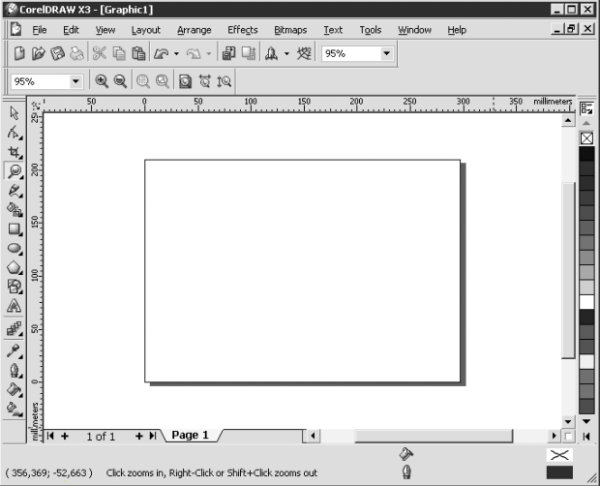
Рис. 2.12 Система координат на рабочей области
Для указания месторасположения любого объекта на рабочей области применяются две координаты.
Первая координата — x — определяет положение объекта по горизонтали относительно левого края печатной страницы, а вторая координата — y — задает положение объекта относительно ее нижнего края. За точку привязки объекта к системе координат XY принимается маркер центра габаритной рамки объекта ().
Перемещать объект можно как свободным движением руки, мышью, так и точно, путем указания числовых значений координат x и y.
СОВЕТ. Действия, связанные с перемещением объектов, лучше всего выполнять,активизировав инструмент Pick (Выбор).
Чтобы переместить объект (группу объектов) с помощью мыши, необходимо действовать следующим образом.
Выделить требуемый объект (группу объектов).
Подвести указатель мыши к маркеру центра габаритной рамки ().
Когда указатель примет вид четырехнаправленной стрелки ( ), нажать кнопку мыши и, удерживая ее, перетащить объект.
), нажать кнопку мыши и, удерживая ее, перетащить объект.
Закончить перемещение объекта (группы объектов) освобождением кнопки мыши.
Как упоминалось, при выделении объекта (группы объектов) вверху окна программы CorelDRAW отображается панель свойств. Два текстовых поля слева отображают координаты x и y объекта (см. рис. 2.10).
Чтобы точно переместить объект (группу объектов) путем указания числовых значений координат x и y, необходимо выполнить такие действия.
Выделить требуемый объект (группу объектов).
Подвести указатель мыши к требуемому полю со значением координаты x или y положения объекта (Object(s) Position) на панели свойств.
Когда указатель примет вид черточки ("I"), щелкнуть кнопкой мыши.
Удалить прежнее числовое значение и ввести с клавиатуры новое.
Закончить ввод значения нажатием на клавиатуре клавиши Enter.
ПРИМЕЧАНИЕ. При работе с текстовыми полями, определяющими положение объекта (группы) координатами x и y, применимы общие правила работы с текстом.
Если вы знакомы с действиями, которые можно выполнять с элементами текста (набор, перемещение, удаление и вставка элементов текста), то вы можете пропустить следующий раздел и перейти к разделу "Изменение размеров (масштабирование)".
Числовые значения вводят с клавиатуры в режиме вставки. Это означает, что набираемые цифры добавляются туда, где находится курсор (вертикально мигающая черточка), раздвигая имеющиеся значения.
Для перемещения по набранному тексту используют клавиши, перечисленные в табл. 2.1.
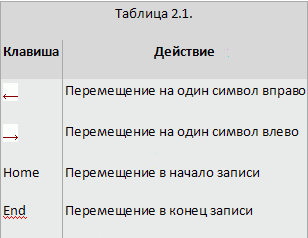
Кроме клавиатуры, для быстрого перемещения курсора по тексту можно использовать мышь. При этом достаточно щелкнуть на том месте в тексте, куда следует перевести курсор.
ПРИМЕЧАНИЕ. Для перемещения по тексту с помощью мыши указатель должен иметь вид черточки (I).
Для удаления отдельных символов используют клавиши, представленные в табл. 2.2.
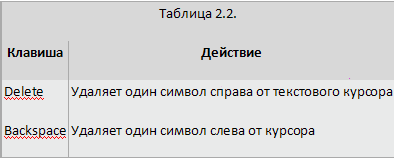
Геометрические размеры объекта можно изменять как свободным движением руки с помощью мыши, так и точно, путем указания числовых значений ширины и высоты.
ПРИМЕЧАНИЕ. Действия, связанные с изменением геометрических размеров объектов, лучше всего производить, выбрав инструмент Pick (Выбор).
Управляющие маркеры габаритной рамки в виде прямоугольников ( ), располагающихся в углах и на серединах сторон (см. рис. 2.7), используются для изменения геометрических размеров выделенных объектов.).
), располагающихся в углах и на серединах сторон (см. рис. 2.7), используются для изменения геометрических размеров выделенных объектов.).
Чтобы с помощью мыши изменить геометрические размеры объекта (группы объектов), необходимо выполнить такие действия.
Выделить требуемый объект (группу объектов).
Навести указатель мыши на один из маркеров габаритной рамки (например, на нижний средний).
Когда указатель мыши примет вид двунаправленной стрелки (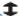), нажать кнопку мыши и, удерживая ее, перетащить маркер. При этом размер габаритной рамки изменится (рис. 2.13).
Закончить изменение геометрического размера объекта (группы объектов), отпустив кнопку мыши.
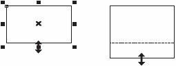
Рис. 2.13 Свободное трансформирование объекта
Расположение указателя мыши на том или ином маркере габаритной рамки приводит к тому, что указатель принимает вид горизонтальной, вертикальной или диагональной двунаправленой стрелки (рис. 2.14).
Стрелки указателя мыши указывают разрешенные направления трансформирования объекта.
Чтобы точно изменить геометрические размеры объекта (группы объектов) путем задания числовых значений, следует выполнить такие действия.
Выделить нужный объект (группу объектов).
На панели свойств щелкнуть кнопкой мыши на поле, соответствующем ширине или высоте (параметр Object(s) Size (Размер объектов)).
Когда указатель мыши примет вид"I", щелкнуть кнопкой мыши.
Удалить прежнее значение и ввести новое.
Закончить ввод значения нажатием на клавиатуре клавиши Enter.
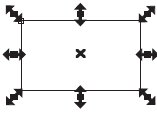
Рис. 2.14 Примеры вида указателя мыши при трансформировании
ПРИМЕЧАНИЕ. При работе с текстовыми полями, определяющими размер объекта (ширину и высоту), применимы общие правила работы с текстом.
Возможна ситуация, когда при изменении ширины объекта автоматически изменяется и его высота, или наоборот. При этом любое изменение одного параметра влечет за собой изменение второго так, что пропорции объекта сохраняются. В этом случае необходимо обратить внимание на состояние маленькой кнопки блокировки, выполненной в виде "замка", — Nonproportional Scaling/Sizing Ratio (Непропорциональное масштабирование/размеры) (см. рис. 2.13). В нажатом состоянии кнопки "замок" открыт — это значит, что изменение одного размера объекта (например, ширины) не будет приводить к каким-либо изменениям другого. При отжатом состоянии кнопки "замок" закрыт — значит, после изменения одного размера пропорции объекта будут сохраняться.
Объект можно вращать как с помощью мыши, так и точно, путем указания числового значения угла поворота.
СОВЕТ. Действия, связанные с вращением объектов, лучше всего производить, активизировав инструмент Pick (Выбор).
Для обозначения выделенного объекта (группы объектов), как вы уже знаете, используется габаритная рамка (см. рис. 2.8).
Повторный щелчок на выделенном объекте (группе объектов) приводит к тому, что управляющие маркеры габаритной рамки принимают вид двунаправленных стрелок, располагающихся в углах и на серединах сторон. Маркер центра габаритной рамки () становится маркером центра вращения и принимает вид (рис. 2.15).
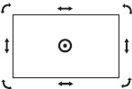
Рис. 2.15 Пример выделенного объекта в режиме Rotation (Поворот)
СОВЕТ. При повторном щелчке на выделенном объекте острие стрелки указателя мыши () следует подвести к контуру объекта или значку центра габаритной рамки ().
ДУправляющие маркеры габаритной рамки в виде изогнутых двунаправленных стрелок, располагающихся на углах, предназначены для поворота объекта (группы объектов) вокруг маркера центра вращения ().
Чтобы повернуть объект (группу объектов) с помощью мыши, необходимо выполнить следующие действия.
Выделить нужный объект (группу объектов).
Перейти в режим вращения, повторно щелкнув на выделенном объекте (группе объектов).
Расположить указатель мыши на любом угловом управляющем маркере в виде изогнутой двунаправленной стрелки.
Когда указатель мыши примет вид 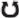 , нажать кнопку мыши и, не отпуская ее, произвести дугообразное движение мышью, поворачивая объект (группу объектов) (рис. 2.16).
Закончить поворот, отпустив кнопку мыши.
Рис. 2.16 Поворот объекта мышью
Другой способ вращения объекта (группы объектов) заключается в точном указании угла поворота (Angle of Rotation) и направления вращения: по часовой стрелке или против. Кроме полей, определяющих положение и геометрические размеры выделенного объекта или группы, на панели свойств присутствует поле Angle of Rotation (Угол поворота) (см. рис. 2.11).
Чтобы точно, путем указания числового значения угла, повернуть объект (группу объектов), следует выполнить следующие действия.
Выделить нужный объект (группу объектов).
На панели свойств щелкнуть кнопкой мыши на текстовом поле Angle of Rotation (Угол поворота).
Удалить прежнее значение и ввести новое.
Закончить ввод значения нажатием на клавиатуре клавиши Enter.
В отличие от способа трансформации с помощью мыши, в данном случае не требуется переводить выделенный объект в режим вращения повторным щелчком.
По умолчанию центр вращения () совпадает с центром габаритной рамки объекта (). Однако положение центра вращения можно изменить, переместив его в требуемое место.
Чтобы изменить положение центра вращения объекта (группы объектов) с помощью мыши, нужно выполнить такие действия.
Расположить указатель мыши на маркере центра вращения ().
Когда указатель превратиться в перекрестие ( ), нажать кнопку мыши и, не отпуская ее, переместить центр вращения.
), нажать кнопку мыши и, не отпуская ее, переместить центр вращения.
Закончить перемещение освобождением кнопки мыши.
Кроме изменения положения центра вращения объекта свободным движением, с помощью мыши, существует возможность точного задания положения центра вращения. Для этого необходимо отобразить дополнительную панель инструментов — Transform (Преобразование) (рис. 2.17).
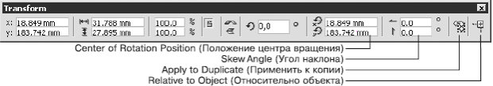
Рис. 2.17 Панель инструментов Transform (Преобразование)
Чтобы отобразить в окне программы данную панель, следует выполнить следующие действия.
В строке меню вверху окна программы выбрать пункт Window (Окно), щелкнув на нем кнопкой мыши.
Выбрать пункт Toolbars (Панели инструментов).
Из списка доступных панелей инструментов выбрать Transform (Преобразование).
Обратите внимание, что большая часть параметров на панели Transform (Преобразование) совпадает с параметрами, расположенными на панели свойств при выделенном объекте (см. рис. 2.11).
Чтобы точно, путем указания числовых значений координат x и y, изменить положение центра вращения объекта, необходимо действовать следующим образом.
Выделить требуемый объект.
На панели Transform (Преобразование) щелкнуть кнопкой мыши на требуемом поле со значением координаты x или y (параметр Center of Rotation Position (Положение центра вращения)).
Удалить прежнее значение и ввести новое.
Закончить ввод значения нажатием на клавиатуре клавиши Enter.
По умолчанию при построении объектов центр вращения совпадает с центром габаритной рамки, который определяет положение объекта относительно левого нижнего угла печатной страницы. Это значит, что вы имеете дело с глобальной системой координат, привязанной к странице. Чтобы правильно расположить центр вращения объекта, необходимо учитывать эту привязку, что очень удобно, если необходимо привязать центр вращения объекта к какой-либо конкретной точке с координатами x и y.
Другой способ — это смещение центра вращения относительно его первоначального положения. Для этой цели удобно перейти в относительную систему координат, в которой за начало отсчета принимается центр габаритной рамки объекта.
Итак, в относительной системе координат центр габаритной рамки объекта принимается за начало отсчета, координаты которого — x = 0 и y = 0. Положительное значение координаты x задает смещение вправо, отрицательное (со знаком минус) — влево. Положительное значение координаты y задает смещение вверх, отрицательное — вниз.
Для выбора относительной системы координат предназначена кнопка Relative to Object (Относительно объекта) на панели Transform (Преобразование) (см. рис. 2.17).
Таким образом, при использовании относительной системы координат вы задаете положение центра вращения объекта относительно центра габаритной рамки.
Одним из видов трансформационных искажений является наклон. Наклон, или скос, представляет собой параллельное смещение противоположных сторон габаритной рамки.
Смещением горизонтальных или вертикальных сторон друг относительно друга можно получить различные варианты (рис. 2.18).
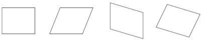
Рис. 2.18 Преобразование объекта наклоном
В каком бы направлении ни производился наклон, стороны, лежащие друг напротив друга, параллельно смещаются, как бы скользя.
Объект можно наклонять как свободным движением руки, с помощью мыши, так и точно, путем указания числовых значений.
ПРИМЕЧАНИЕ. Действия, связанные с наклоном объектов, лучше выполнять, активизировав инструмент Pick (Выбор) ().
Как упоминалось, повторный щелчок на выделенном объекте (группе объектов) приводит к замене прямоугольных управляющих маркеров габаритной рамки ( ) управляющими маркерами в виде двунаправленных стрелок, располагающихся в углах и на серединах сторон. Маркер центра габаритной рамки () превращается при этом в маркер центра вращения () (см. рис. 2.15).
) управляющими маркерами в виде двунаправленных стрелок, располагающихся в углах и на серединах сторон. Маркер центра габаритной рамки () превращается при этом в маркер центра вращения () (см. рис. 2.15).
Управляющие маркеры габаритной рамки в виде прямых двунаправленных стрелок, располагающихся на серединах сторон габаритной рамки, используются для наклона объекта.
Чтобы наклонить объект (группу объектов) с помощью мыши, необходимо выполнить следующие действия.
Выделить требуемый объект (группу объектов).
Перейти в режим наклона, повторно щелкнув на выделенном объекте (группе объектов).
Расположить указатель мыши на нужном управляющем маркере в виде прямой двунаправленной стрелки.
Когда указатель мыши примет вид 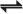 или 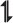 , нажать кнопку мыши и, не отпуская ее, исказить объект в одном из указанных стрелками направлений (рис. 2.19).
Закончить искажение освобождением кнопки мыши.
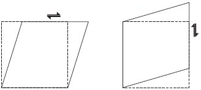
Рис. 2.19 Наклон объекта
Кроме того, точно производить искажение объекта в виде наклона можно указанием величины угла наклона на панели Transform (Преобразование) (параметр Skew Angle (Угол наклона)) (см. рис. 2.17).
При выделении объекта (группы объектов) параметр Skew Angle (Угол наклона) используют для ввода углов наклона по горизонтали и вертикали.
Чтобы точно, путем указания числового значения угла наклона, исказить объект (группу объектов), следует выполнить такие действия.
Выделить нужный объект (группу объектов).
Расположить указатель мыши на требуемое поле Skew Angle (Угол наклона) на панели Transform (Преобразование).
Когда указатель мыши примет вид "I", щелкнуть кнопкой мыши.
Ввести значение угла наклона.
Закончить ввод значения нажатием клавиши Enter на клавиатуре.
ПРИМЕЧАНИЕ. При работе с текстовыми полями, задающими угол наклона, применим общие правила работы с текстом.
Значение угла наклона можно задать как положительным, так и отрицательным числом. Знак указывает на направление наклона (рис. 2.20).
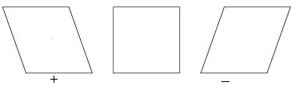
Рис. 2.20 Влияние знака угла наклона на направление скоса
Следует отметить, что в большинстве случаев при данном трансформационном искажении объекта значение угла наклона не превышает 45°, поскольку значения, близкие к углу 90°, приводят к превращению объекта в бесконечную горизонтальную или вертикальную прямую линию (рис. 2.21).
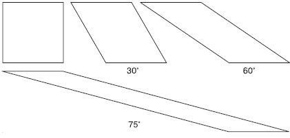
Рис. 2.21 Примеры трансформационных искажений объекта с различными значениями угла наклона
Название инструмента Mirror (Зеркальное отображение), расположенного на панели свойств (см. рис. 2.11), говорит само за себя.
Существует два вида зеркального отображения: горизонтальное и вертикальное. При горизонтальном зеркальном отображении левая половина объекта становится правой (как при переворачивании книжной страницы) (рис. 2.22).
Вертикальное зеркальное отображение можно сравнить с отрывным настенным календарем, когда страницы перелистываются снизу вверх, то есть верхняя половина объекта становится нижней (рис. 2.23).
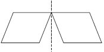
Рис. 2.22 Пример горизонтального зеркального отображения
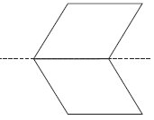
Рис. 2.23 Пример вертикального зеркального отображения
Чтобы зеркально отразить объект, необходимо действовать следующим образом.
Выделить требуемый объект.
Щелкнуть на одной из кнопок зеркального отображения (Mirror) на панели свойств.
Таким образом, на примере прямоугольника мы рассмотрели различные виды трансформационных искажений, которые в программе CorelDRAW можно выполнять над всеми объектами или группами объектов, а не только над прямоугольником. Еще раз перечислю эти искажения:
перемещение,
масштабирование,
вращение,
смещение,
зеркальное отображение.
ВНИМАНИЕ. Все виды трансформационных искажений можно выполнять с помощью мыши или точно, путем указания числовых значений параметров конкретного искажения.
ПРИМЕЧАНИЕ. Если по каким-то причинам панель свойств отсутствует на экране, то ее можно отобразить, выполнив команду меню Window - Toolbars - Property Bar (Окно - Панели инструментов - Панель свойств).
Панель свойств содержит не все, а только наиболее часто используемые при трансформационных искажениях параметры. Для доступа ко всем параметрам искажений следует использовать панель Transform (Преобразование) (см. рис. 2.17).
ПРИМЕЧАНИЕ. Чтобы вывести на экран панель Transform (Преобразование), необходимо выполнить команду меню Window - Toolbars - Transform (Окно - Панели инструментов - Преобразование).
Помните, что действия, связанные с трансформационными искажениями объектов, лучше всего производить, активизировав инструмент Pick (Выбор) ().
Чтобы удалить объект (объекты), следует выделить его и нажать на клавиатуре клавишу Delete. Выделенным объектам можно задавать цвет заливки, для чего необходимо щелкнуть на требуемом цвете на цветовой палитре.